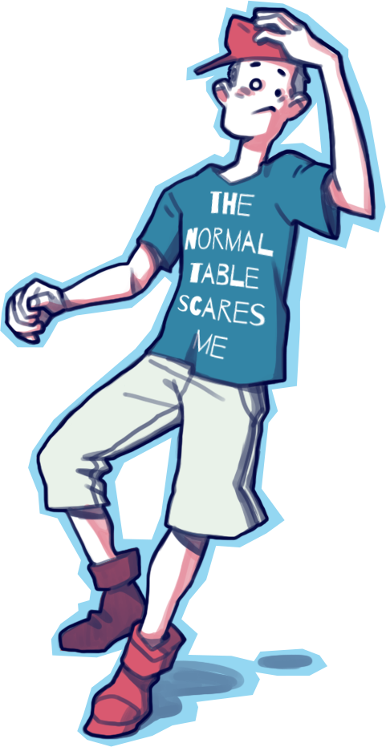
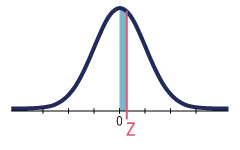

O Normal Assusta?
Em uma vila moram duas pessoas. Uma delas assou e comeu 2 frangos.
Aí vem o estatístico e diz que, naquela vila, cada pessoa comeu 1 frango.
Essa é uma brincadeira feita pelo intelectual italiano Umberto Eco para falar, entre outras coisas, do risco de uma pesquisa falsear um resultado.
Para que a Estatística possa ajudar a representar e entender a realidade ao nosso redor, ela se cerca de ferramentas. Uma delas é a Tabela da Distribuição Normal Padronizada.
Quer experimentar?
\( Z = \)2156

O valor da área total do gráfico equivale a 1 (100%). Logo, sua metade, que é simétrica, equivale a 0,5 (50%). Para um mesmo valor de Z obtido na tabela da distribuição normal padronizada, o resultado final da probabilidade poderá variar dependendo da informação que se deseja buscar.Veja os casos detalhados
21
56
| Z | 0 | 0.01 | 0.02 | 0.03 | 0.04 | 0.05 | 0.06 | 0.07 | 0.08 | 0.09 |
|---|